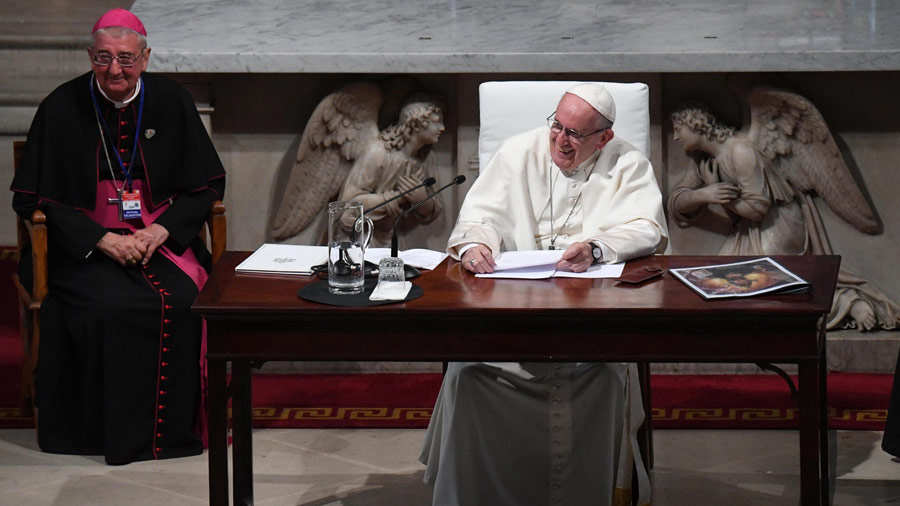

El papa Francisco ofreció este sábado sus consejos a las familias sobre los problemas actuales, como la rupturas o el uso de las redes sociales, durante una ceremonia en el estadio Croke Park de Dublín ante decenas de miles de personas.
Francisco llegó hoy a Dublín para participar en el Encuentro Mundial de las Familias y concluyó su jornada con una sugestiva ceremonia en la que hubo cantos celtas, bailes, y la actuación del tenor italiano Andrea Bocelli.
El Papa aconsejó a las familias que bauticen a los niños de pequeños y no esperen “a que crezcan para que ellos elijan” porque dijo, “con el bautizo recibirán el Espíritu Santo y serán mucho más fuerte porque tienen la fuerza de Dios”.
También habló de las redes sociales, que opinó “no son necesariamente un problema para las familias” sino que puedan ser beneficiosas, aunque con “prudencia”.
“Las redes sociales no son necesariamente un problema para las familias, sino que pueden ayudar a construir una red de amistades, solidaridad y apoyo mutuo”, dijo en su discurso.
Pero advirtió de que es importante “que estos medios no se conviertan en una amenaza para la verdadera red de relaciones de carne y hueso, aprisionándonos en una realidad virtual y aislándonos de las relaciones auténticas que nos estimulan a dar lo mejor de nosotros mismos en comunión con los demás”.
En los testimonios también se escuchó el de una familia de Burkina Faso cuya historia llevó al papa a recordar que las familias necesitan aprender tres palabras: “perdón”, “por favor” y “gracias”.